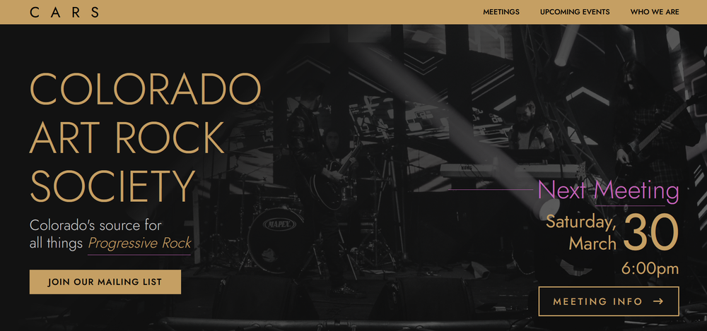
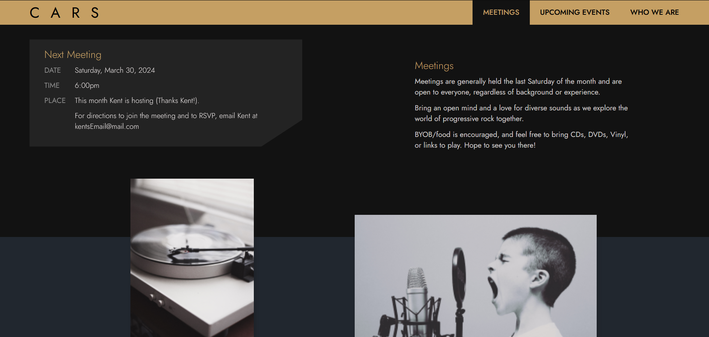
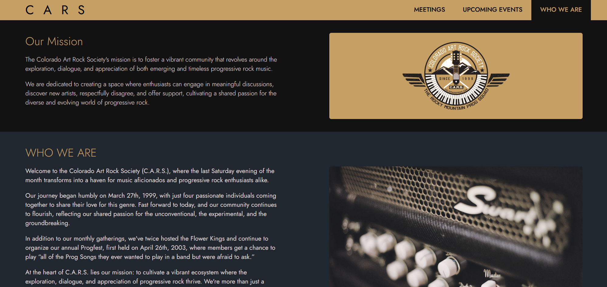
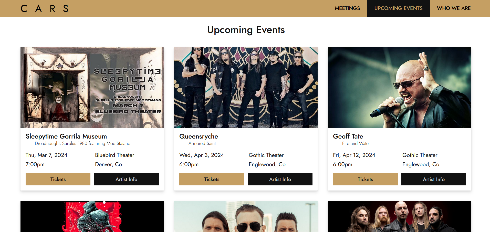
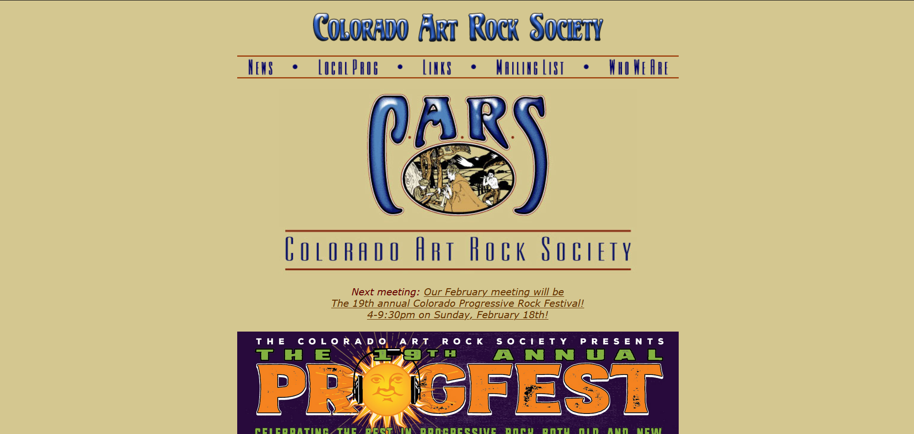
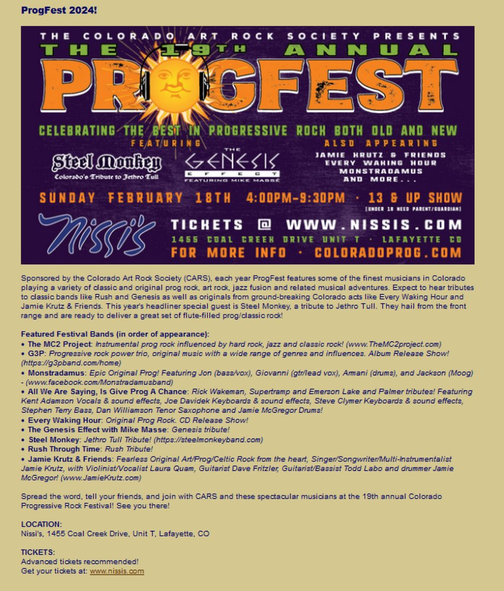
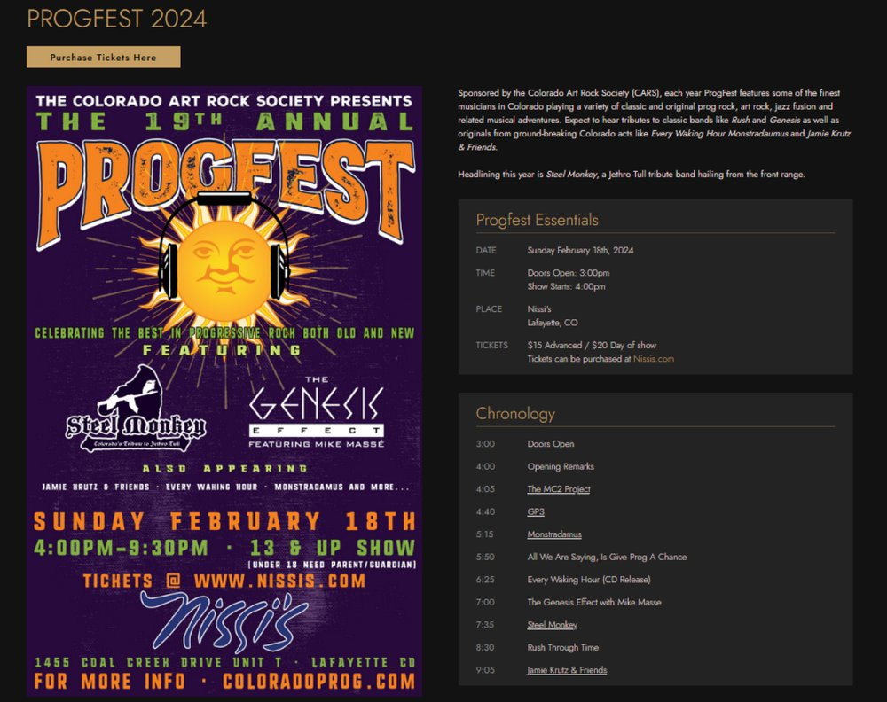
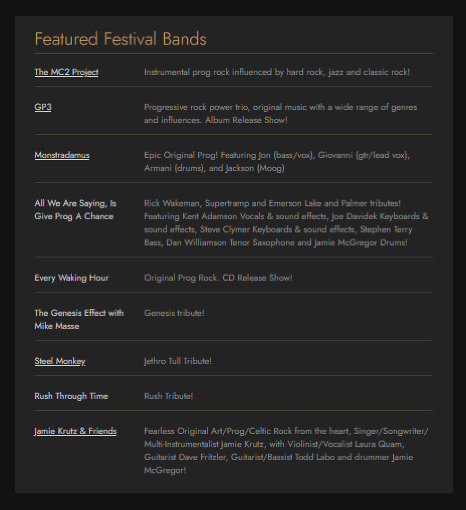

Transforming the Colorado Art Rock Society Website:
From Concept to Implementation
Pivoting from a simple redesign request to a comprehensive user-centric solution.

Background
Introducing the Colorado Art Rock Society
The Colorado Art Rock Society (C.A.R.S.) stands as a beacon for those enamored with the complexities and nuances of progressive rock music. Founded with a mission to cultivate a vibrant community centered around exploration, dialogue, and appreciation of this genre, C.A.R.S. has evolved into a haven where enthusiasts gather to share their passion for groundbreaking musical expressions.
Mission
At C.A.R.S., the commitment lies in fostering an environment where progressive music aficionados can engage in meaningful discussions, discover new artists, and celebrate the diversity of progressive rock. Since its inception in 1999, the community has grown from a humble gathering of four individuals to a thriving collective united by their shared love for the unconventional and the experimental.
Problem
The Need for Redesign
Despite their rich history and vibrant community, the online presence has fallen behind the times. The current website, constructed in 2007 using outdated web design tools, struggles to reflect the dynamic spirit of the organization.
Dated aesthetics, broken links, and an antiquated layout undermine efforts to connect with both existing members and potential newcomers. Dead links litter the site, leaving visitors questioning the vitality of the community. Moreover, the mailing list, once hosted on Yahoo Groups, now leads nowhere following Yahoo's discontinuation of the service.
Goals
Objectives of the Redesign Project
-
Enhanced Meeting Visibility
The primary objective is to ensure visitors can easily find information about upcoming meetings. By prominently displaying meeting details, the aim is to increase attendance and foster a stronger sense of community engagement.
-
Streamlined Mailing List Signup
Another key goal is to provide a seamless and intuitive process for prospective members to join the mailing list. By offering a clear call-to-action and simplifying the signup process, the aim is to expand the reach and cultivate a larger and more engaged audience.
-
Curated News Section
To enrich the user experience, the goal is to consolidate the latest news and updates from the progressive rock world into a dedicated section on the website. By curating relevant content, the aim is to keep the community informed and engaged, positioning the website as a valuable resource for members and the public at large.
-
Comprehensive Event Listings
Lastly, the aim is to enhance the website's utility by providing comprehensive listings of upcoming concerts and events in the Colorado market. By offering links to tickets and band information, the goal is to become the go-to destination for local music enthusiasts seeking to explore the progressive rock scene.
Objectives Achieved with the New Website:
With the redesign, the overarching goal was to transform the Colorado Art Rock Society website into a dynamic, user-centric platform that serves as a hub for both information and community engagement. By addressing the aforementioned objectives, the aim was to create a modern and intuitive website that not only meets the needs of existing members but also attracts and retains new enthusiasts, ultimately fostering a stronger and more vibrant progressive rock community in Colorado and beyond.
Constraints
Hosting Limitations
The main constraint stemmed from the limitations of the client's current hosting provider, which only allowed for FTP uploads and lacked support for modern JavaScript frameworks.
Client Restraint
Compounding this challenge was the client's decision to adhere to the current hosting contract until its expiration, constraining the project's technical capabilities and scope until the end of the year.
Key Screens
From the Home Page featuring prominent meeting details and mailing list sign-up, to curated sections highlighting progressive rock news and local events, each screen is tailored to enhance user engagement and facilitate easy access to information, aligning with the project's overarching goals.
Landing Page
The Home Page serves as the gateway to the Colorado Art Rock Society's community, providing essential meeting details upfront and a clear call-to-action to join the mailing list.
Meeting Page
At the forefront of the meetings page, the Next Meeting section provides clear and concise details about the upcoming event, including date, time, and location.
About Page
The About Page provides visitors with a comprehensive understanding of the Colorado Art Rock Society, highlighting its mission, who they are, and a brief history of the group.
Events Page
Designed with the user experience in mind, the Events Page prioritizes clarity and accessibility, ensuring visitors can quickly find relevant information and make informed decisions about attending upcoming concerts and events.
Before/After
From the Home Page featuring prominent meeting details and mailing list sign-up, to curated sections highlighting progressive rock news and local events, each screen is tailored to enhance user engagement and facilitate easy access to information, aligning with the project's overarching goals.
Landing Page
In the old website, the hero section suffered from a poor color scheme and a lack of visual structure. Meeting details were buried within a sentence, lacking prominence and clarity. These shortcomings hindered user engagement and failed to quickly and effectively communicate details of upcoming meetings and events.
In the redesigned website, the hero section underwent a transformation to address these issues. A fresh color scheme was implemented to enhance visual appeal and create a more inviting atmosphere. A clearer visual hierarchy was introduced, meeting details are prominently displayed, and a dedicated call-to-action to join the mailing list.
Progfest Section
In the original website, the Progfest page featured a poster and a paragraph describing the event, followed by a list of performers. However, the ticket link was inconspicuously placed at the bottom of the page, blending into the background color and lacking prominence. This layout made it challenging for visitors to easily find and purchase tickets, potentially resulting in reduced ticket sales and attendance.
In the redesigned website, the Progfest page underwent significant improvements to enhance user experience and engagement. The poster remains a focal point, providing a visual representation of the event. However, the ticket link is now prominently displayed at the top of the page, ensuring easy access for visitors to purchase tickets. Additionally, a schedule of the bands is included, allowing attendees to plan their day effectively. Below the schedule, a dedicated section showcases the performers with artist links and short bios about each band/artist. These enhancements not only streamline the ticket purchasing process but also provide valuable information and insights about the performers.
 Future Improvements
While the core functionality has been implemented, there is room for future improvements. A number of features are under development or being discussed, aiming to further enhance the Colorado Art Rock Society website. From improved communication tools to interactive member features, the focus remains on refining recent updates to deliver an even better user experience.
ADMINISTRATION PANEL
One potential area for further refinement is the implementation of an administrative section within the website. This section would empower administrators to create and send emails directly to group members, streamlining communication processes and fostering more efficient engagement. Currently, administrators rely on a separate Google email list for communication, which can be cumbersome and disjointed. By integrating email functionality directly into the website, administrators can better manage communications and ensure important updates and announcements reach group members in a timely manner. This enhancement is planned for implementation once the current hosting site contract expires, enabling a seamless transition to the new system.
Member Spotlight
Another exciting feature currently under development is the Member Spotlight section, where a selected member responds to seven questions, inspired by multitude of time signatures in seven found in progressive music. Their responses, along with mentions of favorite bands, will be compiled into a Spotify playlist, showcasing the diverse musical tastes within the community. This interactive and engaging feature will not only highlight individual members but foster a sense of community and shared appreciation for progressive rock music.
Meeting Minutes
Additionally, the introduction of a Meeting Minutes feature is planned to enhance the website's utility further. This feature will allow attendees to document and share details about the music listened to, videos watched, and discussions held during meetings. Accompanied by a Spotify playlist curated from the music shared during meetings, this feature provides valuable insights into the group's activities and will foster engagement both during and after meetings.
Member Contributions
Once the administrative panel is in place, members will have the opportunity to contribute to the website by submitting album reviews, concert reviews, comments, and other content. This collaborative approach will not only enrich the website with diverse perspectives and insights but also strengthen the sense of community and shared ownership among members.